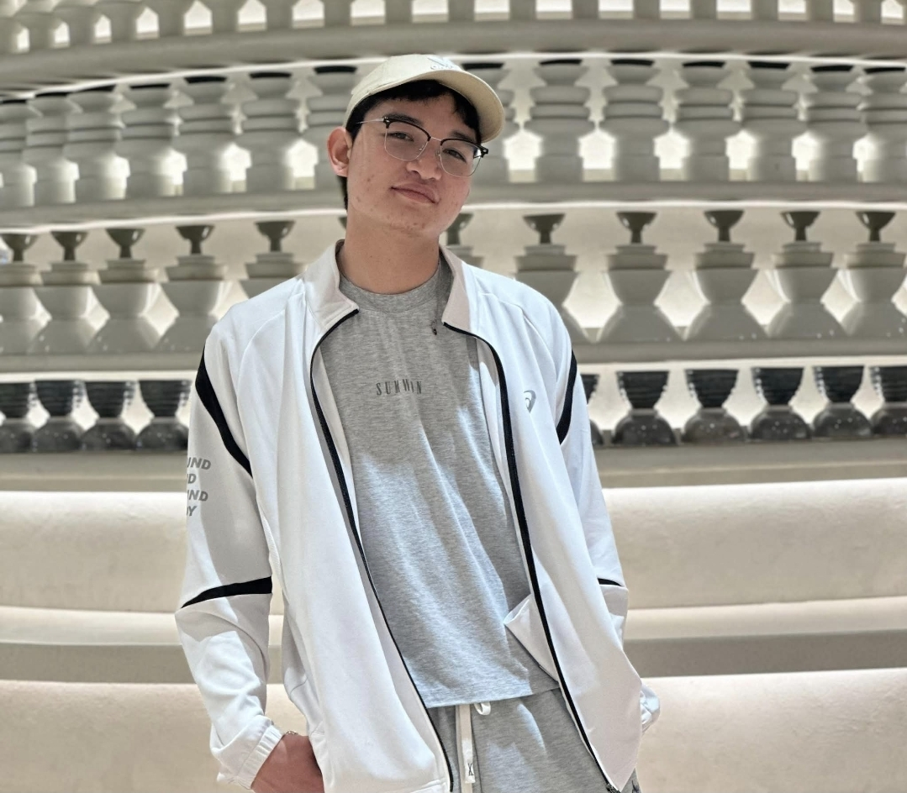
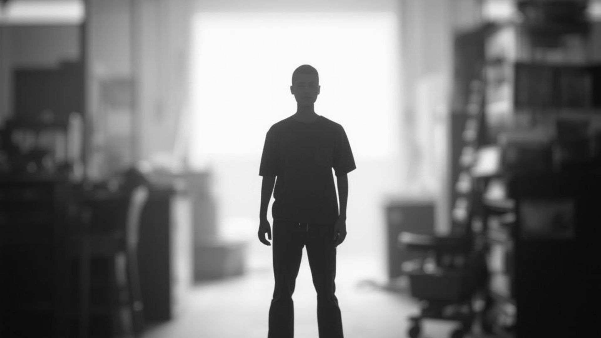
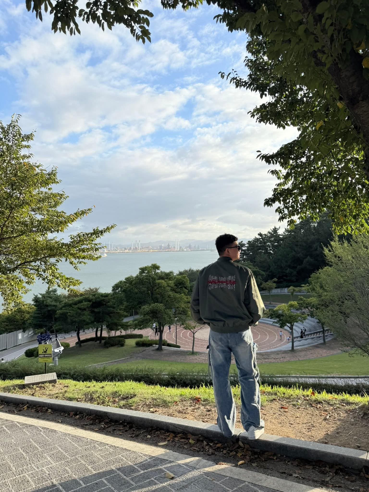

The Last Card: A Filipino LGBTQ+ Worker’s Quiet Strength Abroad

Venn, a Filipino migrant worker in South Korea balancing work, study, and family responsibility.
A Quiet Night After Work
The biting wind of a South Korean winter waits outside, but inside Venn's cramped room, a different kind of endurance begins. After a ten-hour shift, he logs into his online university class. The transition is immediate: from manual labor to mental focus, driven by a deep sense of purpose.

After long factory shifts, Venn continues his university classes late at night.
Being the “Last Card”
To his family, Venn is the “last card”—the final, reliable person they depend on when things become difficult.

Venn regularly sends remittances home to the Philippines.
Working in a Male-Dominated Space
Most of Venn’s days are spent in a factory floor defined by rigid expectations of masculinity. As a gay Filipino worker, he navigates this by letting his professional competence speak for itself.

Venn works long shifts in a male-dominated environment.
Life Beyond the Factory
Venn playing competitive volleyball.
Quiet Strength
Venn shows us that true resilience is often steady, responsible, and quietly persistent—a powerful form of resistance from a 'last card' defying all odds.

Despite the challenges, Venn continues building a future for his family.
Interview Source & Ethical Consent
This feature story is based on an interview with Venn conducted in **February 2026**. Venn provided full permission and informed consent for the use of his actual name and story.